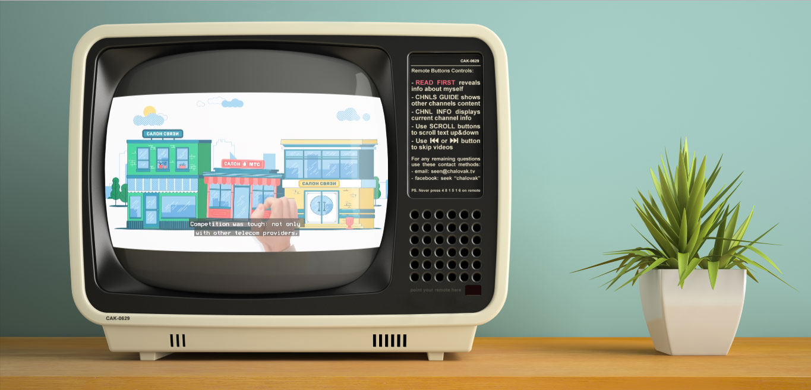
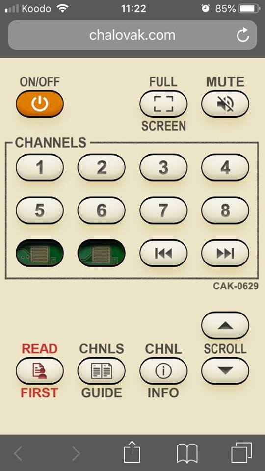

chalovak.tv
chalovak.tv is the personal portfolio of Anton Chalovak.

Arriving on the landing page, the site informs you a smartphone is required to navigate the site. This is at first, for lack of a better word, annoying. After confirming your phone is in-hand, you are prompted to either navigate to the website on your phone and enter the code which is now displayed displayed, or scan a QR code. I repeat the sentiment above. However, after scanning the code the experience of the site becomes... uncanny. You are presented with a 1980's style CRT television, atop a counter next to a plant.
It is unclear if the scene is a photograph, a 3d model or a combination of the two. The TV is playing one of Chalovak's advertising campaigns, and your smartphone has become the remote control. You can switch between his various spots, by changing the channel, and view descriptions of his work by pressing the guide button. In small text on one side of the TV it warns you to never press a certain combination of numbers on the remote (which of course you immediately do), and the screen becomes a classic rendition of Snake, which may be controlled using the numbers on the remote.
While the interface is not always immediately responsive, and the video on the TV can be glitchy at times, the over all experience is all at once nostalgic, futuristic, and extremely engaging. While one could assume such an elaborate system would distract from the content of Chalovak's portfolio, the effect is actually the inverse; the focus is entirely on the TV and it's content, encouraging you to watch his spots for much longer than expected.